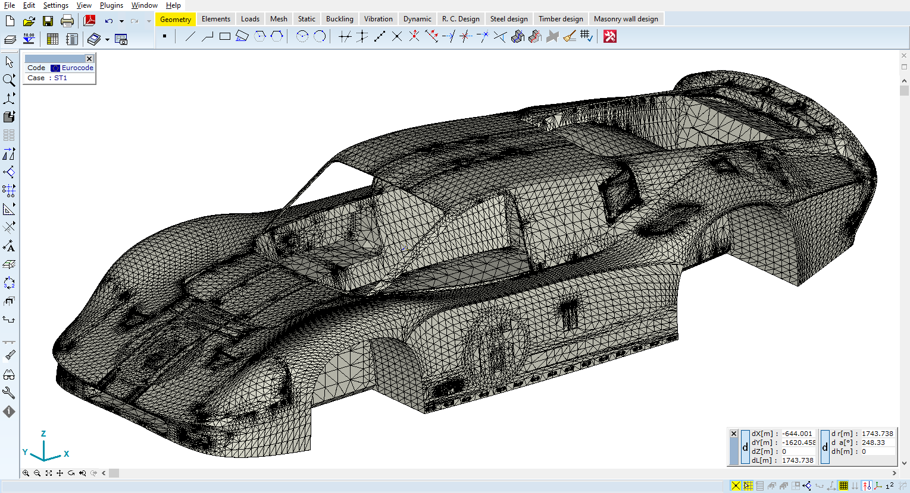
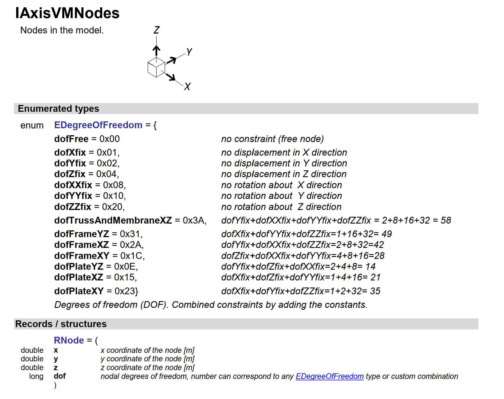
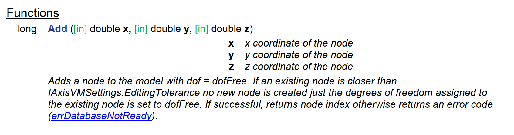
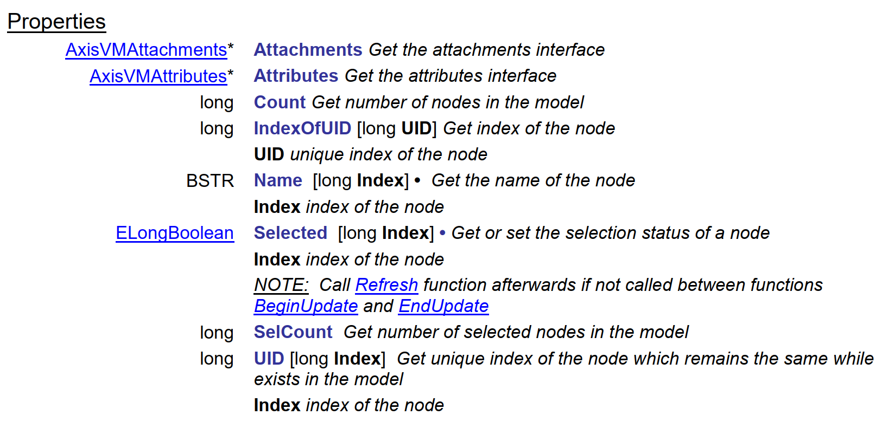
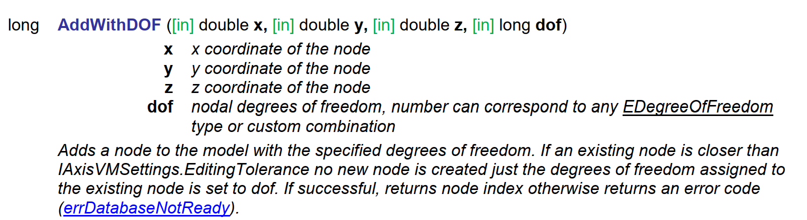

PyAxisVM - The official python package for AxisVM¶

The PyAxisVM project offers a high-level interface to AxisVM, making its operations available directly from Python. It builds on top of Microsoft’s COM technology and supports all the features of the original AxisVM COM type library, making you able to
build, manipulate and analyse AxisVM models
find better solutions with iterative methods
combine the power of AxisVM with third-party Python libraries
build extension modules
On top of that, PyAxisVM enhances the type library with Python’s slicing mechanism, context management and more, that enables writing clean, concise, and readable code.
Getting Started¶
Installation and testing¶
Register AxisVM’s Type Library¶
If this is not your first time using AxisVM through a COM interface on your machine, you should already have a registered type library and you can skip this step. Otherwise, follow the instructions at the beginning of the AxisVM API Reference Guide.
Install PyAxisVM¶
This is optional, but we suggest you to create a dedicated virtual enviroment at all times to avoid conflicts with your other projects. Create a folder, open a command shell in that folder and use the following command
>>> python -m venv venv_name
Once the enviroment is created, activate it via typing
>>> .\venv_name\Scripts\activate
The AxisVM python package can be installed (either in a virtual enviroment or globally) from PyPI using pip on Python >= 3.6:
>>> pip install axisvm
Launch AxisVM from Python¶
The axisvm.com.client submodule implements various tools to handle the client side operations of creating a COM connection. Import the module and start a new application instance with the start_AxisVM method:
from axisvm.com.client import start_AxisVM
axapp = start_AxisVM(visible=True)
To test the connection, you can query the path of the executable being run by typing axapp.FullExePath.
How to use the API¶
pyaxisvm has two layers. The first one is the raw type library extracted from AxisVM using the comptypes package. We are working on an online version of it, until that the documentation of this layer is only available in pdf format, that you should already posess at the moment of reading this notebook. If you don’t have it yet, go to our website, and look for it under downloads. Be careful to download the documentation that matches the version of your AxisVM instance.
Basic API usage¶
Firts of all, we need a runnning AxisVM either in the background, or with the graphical interface.
from axisvm.com.client import start_AxisVM
axvm = start_AxisVM(visible=True, daemon=True)
As a consequence of the hierarchical structure of the models in AxisVM, every model creation proccess starts with nodes. To create nodes we need an interface to the nodes of the application. This is achieved by the IAxisVMNodes class of the type library. If you look it up in the pdf document, you will see this:

Just like other interfaces, the documentation of IAxisVMNodes begins with listing the enumerations and records specific to nodes. Below these, you can see the functions of the interface.

After all the functions, the documentation of the interface is finished by listing the properties of the interface.

from axisvm.com.client import start_AxisVM
axvm = start_AxisVM(visible=True, daemon=True)
modelId = axvm.Models.New()
model = axvm.Models[modelId]
Right below the Add function, there is the AddWithDOF, with the following documentation:

It tells, that the function needs to be called with specifying three scalar values and a fourth one specifying a DOF component. The enumeration EDegreeOfFreedom was listed at the beginning of the documentation of the interface.
from axisvm.com.tlb import dofFree
id1 = model.Nodes.AddWithDOF(-1, -1, 0, dofFree)
id2 = model.Nodes.AddWithDOF(1, -1, 0, dofFree)
id3 = model.Nodes.AddWithDOF(1, 1, 0, dofFree)
id4 = model.Nodes.AddWithDOF(-1, 1, 0, dofFree)
After the session has ended, close the application by
axvm.Quit()
Tips and Tricks¶
This page sums up the changes in syntax, compared to the ‘raw’ usage of the COM type library. Everything the API provides out of the box is still available and is working as ever, but the syntax of Python provides a few shortcuts to make coding easier.
Collections and Slicing¶
When accessing items of collection-like COM classes (like IAxisVMDomains, IAxisVMSurfaces, anything having an Item method), you can use the slicing mechanism of Python. Suppose that we have an IAxisVMModel instance called axm. The model has several domains, each of them having the property Weight. Let say we want to calculate the weight of all domains. The out of box solution for this would be something like
weights=[]
for i in range(axm.Surfaces.Count):
weights.append(axm.Surfaces.Item[i+1].Weight)
weight = sum(weights)
or using a list comprehension
weight = sum([axm.Surfaces.Item[i+1].Weight for i in range(axm.Surfaces.Count)])
or maybe even this
surfaces = [axm.Surfaces.Item[i+1] for i in range(axm.Surfaces.Count)]
weight = sum(map(lambda s : s.Weight, surfaces))
Anyhow, although there is nothing inherently wrong with these approaches, they clearly doesn’t measure up to
# if you are new to this, the colon means 'all indices in range'
weight = sum(axm.Surfaces[:].Weight)
or
weight = sum(s.Weight for s in axm.Surfaces)
or maybe
weight = sum(map(lambda s : s.Weight, axm.Surfaces))
Notice how the loops here are carried out over the collection object itself. This is because collection types implement the so-called iterator protocol.
It is also possible to provide negative indices:
axm.Surfaces[-1].Weight # equivalent to axm.Surfaces[axm.Surfaces.Count].Weight
axm.Surfaces[-2].Weight # equivalent to axm.Surfaces[axm.Surfaces.Count - 1].Weight
Without further due, some other use cases that exploit Python’s slicing mechanism:
axm.Surfaces[1, 5, 7].Weight
axm.Surfaces[1:4].Weight # equivalent to axm.Surfaces[1, 2, 3].Weight
axm.Surfaces[1:8:2].Weight # equivalent to axm.Surfaces[1, 3, 5, 7].Weight
axm.Surfaces[8:1:-2].Weight # equivalent to axm.Surfaces[8, 6, 4, 2].Weight
Furthermore, instead of typing axm.Surfaces.Count, you can use len(axm.Surfaces) to get the number of surfaces in the model.
Be aware here, that the index of the first item in any iterable COM object is 1, opposed to the zero-indexed nature of Python.
Context Management¶
If you have some experience with AxisVM and COM, you know about the methods BeginUpdate and EndUpdate. With python, you don’t need to care about this, instead you can simply use the with statement like this
with axm as model:
# do some modification here on the model
...
Accessing the Type Library¶
When a new instace of IAxisVMApplication is created, the type library is generated on demand. After that, the type library can be accessed as
import axisvm.com.tlb as axtlb
daemon=True¶
When creating a new interface, you can do it like
from axisvm.com.client import start_AxisVM
axvm = start_AxisVM(visible=True, daemon=True)
The keyword argument daemon=True is a simple shortcut, equivalent to
from axisvm.com.client import start_AxisVM
import axisvm.com.tlb as axtlb
axapp = start_AxisVM(visible=True, daemon=False)
axapp.CloseOnLastReleased = True
axapp.AskCloseOnLastReleased = False
axapp.AskSaveOnLastReleased = False
axapp.ApplicationClose = axtlb.acEnableNoWarning
As a result of these settings, if the COM server is shut down, AxisVM shuts down either, hence the term daemon. Shutting down the COM server can be done with typing
axapp.Quit()